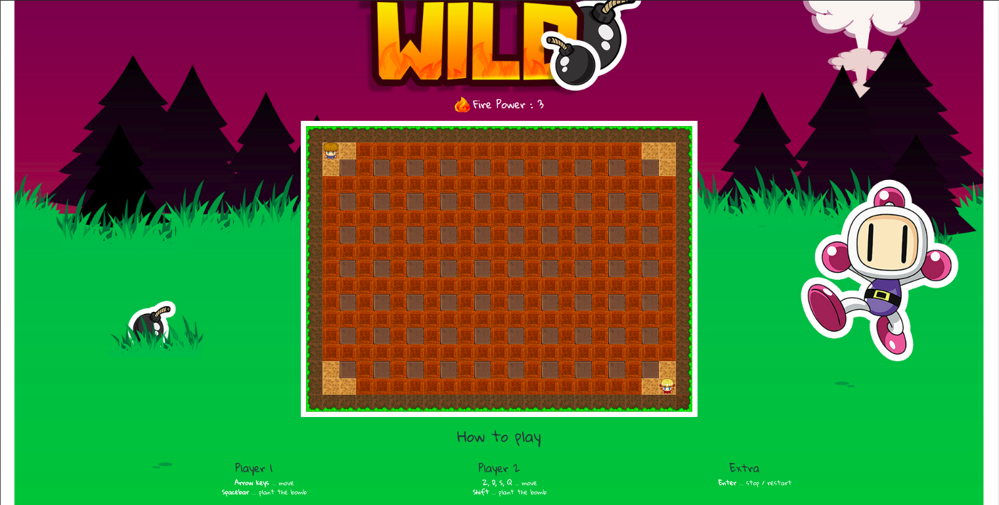
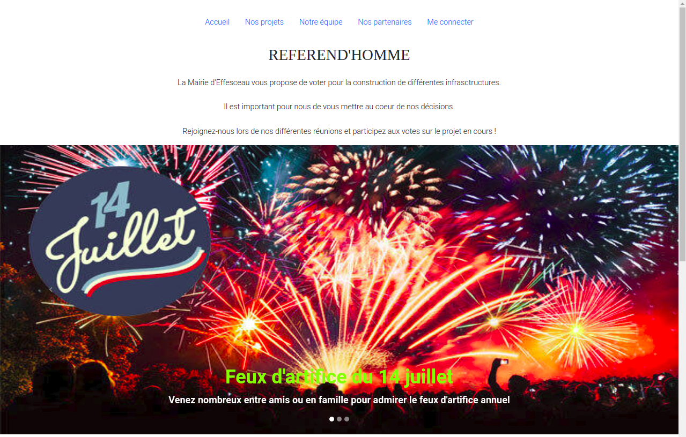
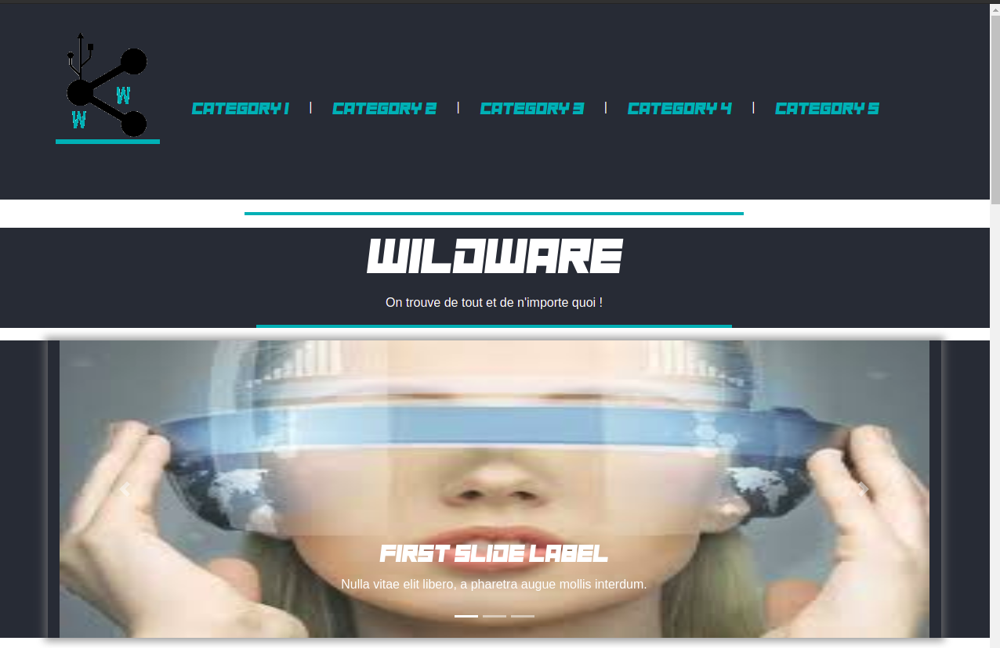

<div class="contain">
  <div class="row justify-content-center">
    
    <div class="col-xl-3 col-lg-4 col-sm-6 col-12 projets shadow card" style="width: 18rem;">
      
      <h2 class="text-center pt-2 card-title">Cent pour un toit</h2>
      <h5 class="text-center pt-2 card-title">Site vitrine</h5>
      <div class="card-body">
        <h6 class="date">Mai 2019 - Aujourd’hui</h6>
        <p class="card-text"><br>
          Site web vitrine pour l'association Cent pour un toit de Mâcon, en relation client.<br>
          Equipe front-end de 4 personnes.<br>
          Utilisation d'Angular, Git, Github, méthodes agiles, écoconception.<br>
          - HTML/SCSS<br>
          - Bootstrap<br>
          - JavaScript/TypeScript<br>
          - Firebase
        </p>
        <a href="https://github.com/WildCodeSchool/Lyon-0219-Projet3-CentPourUnToit" target="_blank">Lien Github</a><!--Lien github du projet -->
      </div>
    </div>
    <div class="col-xl-3 col-lg-4 col-sm-6 col-12 projets shadow card" style="width: 18rem;">
      
      <h2 class="text-center pt-2 card-title">Bomber Wild</h2>
      <h5 class="text-center pt-2 card-title">Jeu-vidéo</h5>
      <div class="card-body">
        <h6 class="date">Avril 2019 - Juin 2019</h6>
        <p class="card-text"><br>
          Jeu-vidéo inspirée du célèbre jeu Bomberman, jouable avec 2 joueurs sur le même clavier, en 1 versus 1.<br>
          Equipe front-end de 5 personnes.<br>
          Utilisation d'Angular, Git, Github, méthodes agiles, écoconception. <br>
          - HTML/SCSS<br>
          - Bootstrap<br>
          - JavaScript/TypeScript<br>
        </p>
        <a href="https://github.com/Ellioth-B/Bomberman_Projet" target="_blank">Lien Github</a><!--Lien github du projet -->
      </div>
    </div>
    <div class="col-xl-3 col-lg-4 col-sm-6 col-12 projets shadow card" style="width: 18rem;">
      
      <h2 class="text-center pt-2 card-title">Réferend'Homme</h2>
      <h5 class="text-center pt-2 card-title">Projet Hackaton(48h)</h5>
      <div class="card-body">
        <h6 class="date">26-27 Juin 2019</h6>
        <p class="card-text"><br>
          Application mobile permettant aux citoyens d'une même ville de participer aux décisions d'aménagements d'infrastructure proposer 
          par la mairie/préfecture de la dite ville, aux travers d'un système de vote.<br>
          Equipe mixte, 2 front-end et 3 back-end.<br>
          Utilisation d'Angular, API Platform, Git, Github, méthodes agiles.<br>
          - HTML/SCSS<br>
          - Bootstrap<br>
          - JavaScript/TypeScript<br>
          - PHP
        </p>
        <a href="https://github.com/Ellioth-B/Referend-Homme" target="_blank">Lien Github</a><!--Lien github du projet -->
      </div>
    </div>
    <div class="col-xl-3 col-lg-4 col-sm-6 col-12 projets shadow card" style="width: 18rem;">
      
      <h2 class="text-center pt-2 card-title">Wild Bazar</h2>
      <h5 class="text-center pt-2 card-title">Site e-commerce</h5>
      <div class="card-body">
        <h6 class="date">Mars 2019</h6>
        <p class="card-text"><br>
          Site e-commerce où les utilisateurs peuvent acheter de nombreux objets connectés.<br>
          Equipe front-end de 6 personnes.<br>
          - HTML/SCSS<br>
          - Bootstrap<br>
        </p>
        <a href="https://github.com/Ellioth-B/wild_bazar" target="_blank">Lien Github</a><!--Lien github du projet -->
      </div>
    </div>
  </div>
</div>